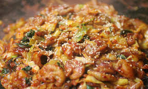
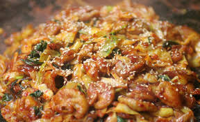
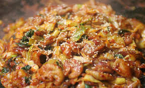

이름: 이예성(Lee Ye seong) 나이: 17살(2002.01.21) 성별: 남자 학교: 선린인터넷고등학교 사는 곳: 강동구 명일동 혈액형: A형
좋아하는 것
음식
 치킨곱창초코아이스크림
운동
축구농구트릭킹
즐겨듣는 노래
선린교가니가 보고싶은 밤우리 집을 못 찾겠군요
선린에 오고 나서
중학교 3학년 2학기 초 부터 it관련 고등학교를 진학을 준비 했습니다. 알아보던 도중 '선린인터넷고등학교'를 알게 되었고 입학 설명회도 다녀오며 선린에 입학하게 되었습니다. 학기 초 c언어 실력이 다른 친구들보다 부진했고, 이해하기도 힘들었습니다.
또한 교과 공부도 남들처럼 열심히 하기 위해 힘써보았지만 노력은 결과를 뒷받침해주지 못하였습니다. 노력이 부족했고 그만큼 절실하지 못했다고 생각합니다. 앞으로는 나의 부족한 부분이 무엇인지 깨닫고 바로잡기 위해 노력하고 힘쓰는 제가 되겠습니다!
학교 생활
소대반이 아니라 공학반이 되어서 감사하게 생각하고 있습니다. 반 분위기, 친구 관계, 선생님 등 모든 학교 생활이 즐겁고 유익합니다. 학교를 가기 위해 일어나고, 통학하는 과정은 너무 힘들고 괴롭지만 친구들을 만나서 이야기하고 함께 웃을 수 있어서
활력소가 되는 것 같습니다. 또한 동아리 선배들도 정말 친절하시고 잘 대해주셔서 행복한 생활을 하고 있습니다^^
기억에 남았던 여행
우정여행-전주
중학교 3학년 5월달에 친구들과 돈을 모아서 2박 3일간 전주 여행을 갔습니다. 맛있는 것도 먹고 여러가지 체험들도 하면서 친목을 쌓았고 좋은 추억을 남겼습니다~
우정여행-제주도
제주도에서 친구들과 많은 장소를 관광하고 여러 재미있는 체험도 하고 맛있는 밥도 먹었습니다. 비행기 이륙할 때 느낌이 너무 좋아요..ㅠ
학교수련회-고1
고등학교 친구들과 처음 수련회를 다녀 왔습니다. 친구들과 협동심과 타협심을 기르는 프로그램을 하면서 더욱 친해지는 계기가 되었고, 저녁에 마피아게임이랑 여러 재미있는 활동도 하고 진지한 이야기들도 하면서 친구들에 대해 더욱 잘 알 수 있는 기회가 되었습니다.
 
 
.jpg)
.jpg)
.jpg)
.jpg)
.jpg)
.jpg)
.jpg)
.jpg)
.jpg)